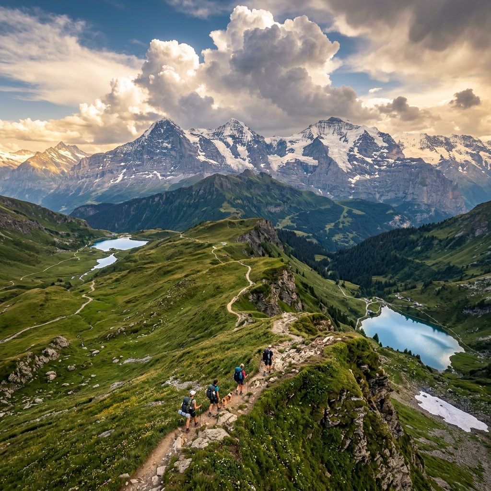

Top 10 Hidden Mountain Trails: The Most Breathtaking Hikes You've Never Heard Of
From the Swiss Alps to Patagonia, adventurous travelers are discovering remote alpine trails that offer jaw-dropping views far from the tourist crowds.

From the Swiss Alps to Patagonia, adventurous travelers are discovering remote alpine trails that offer jaw-dropping views far from the tourist crowds.